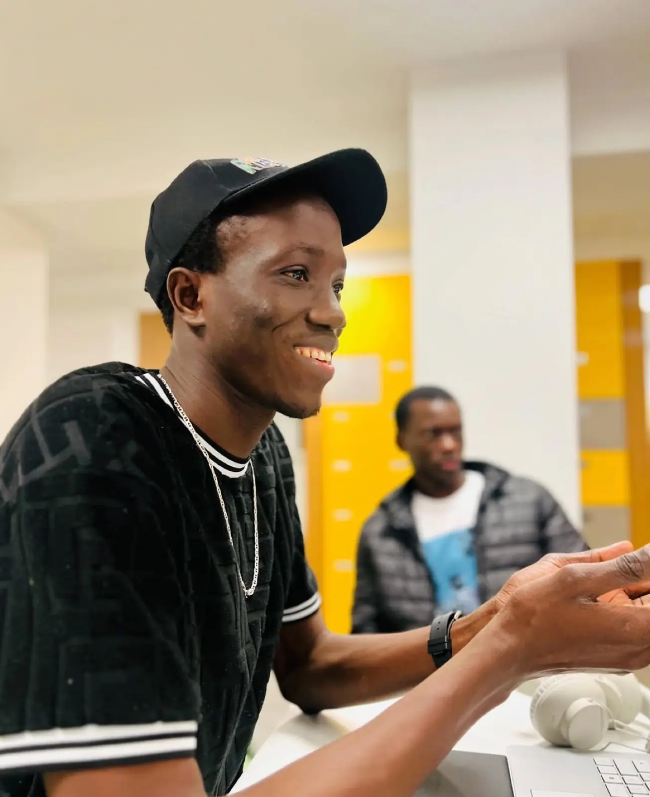
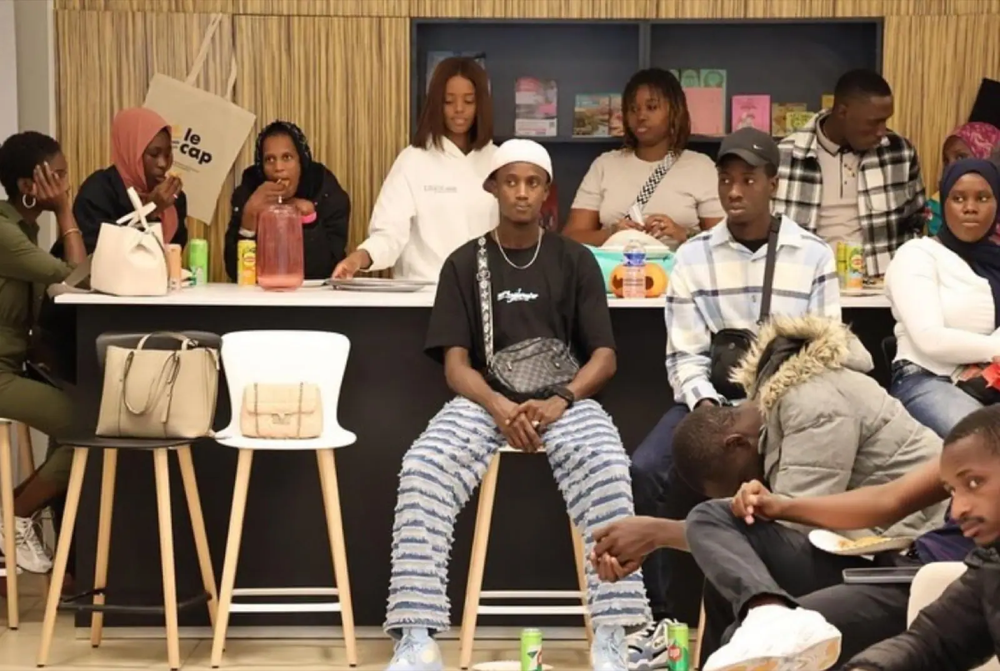
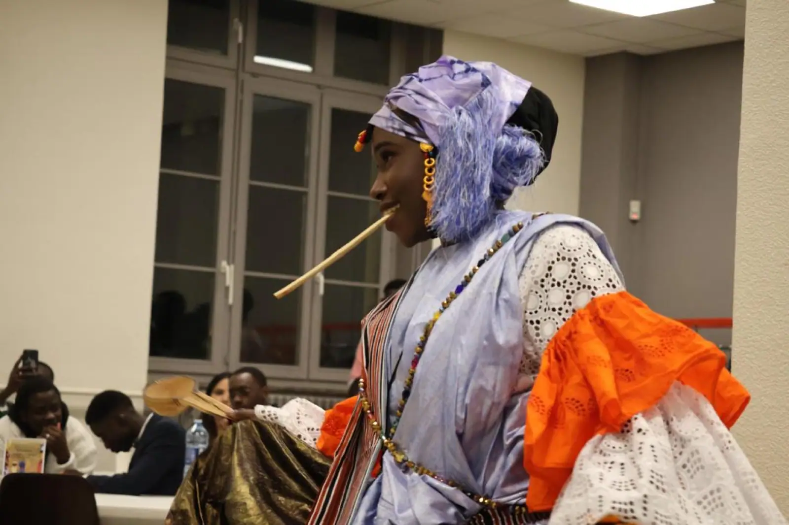
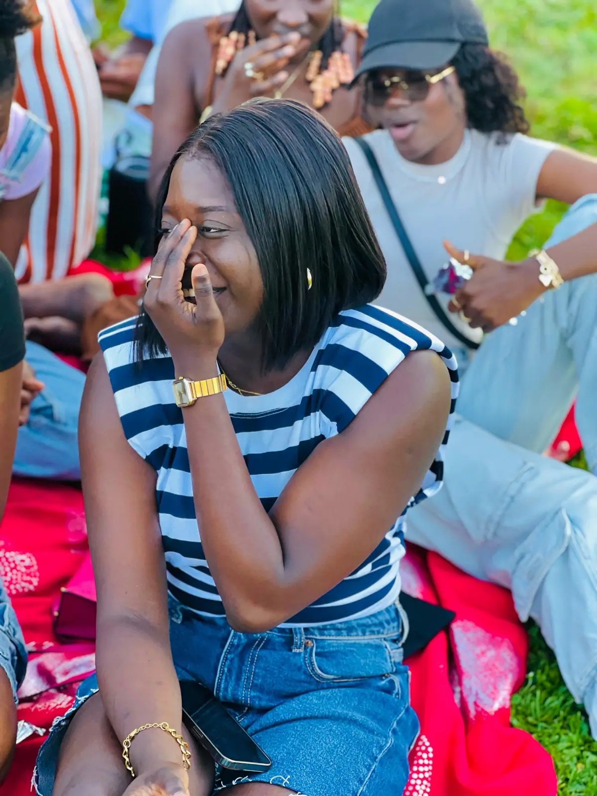

Nos actions
Quatre axes de travail, portés par des commissions bénévoles, toute l’année : accueil et installation, solidarité, culture et transmission, sport et cohésion.
Axe 1
Accueil et installation
Le premier travail de l’AESM commence avant même l’arrivée en France. Depuis la mise en ligne du site en mars 2025, il est possible de se signaler à l’association plusieurs mois à l’avance — certains étudiants se sont fait connaître plus de cinq mois avant leur arrivée à Metz. Cela laisse le temps de mettre en relation les nouveaux avec des étudiants déjà installés, d’aider à chercher une colocation, de préparer une attestation d’hébergement une fois sur place, et d’accompagner les premières démarches administratives — CAF, préfecture, inscription à l’université.
Le 20 février 2025, le président, le vice-président, la commission pédagogique et la commission d’accueil et d’intégration se sont déplacés en résidences universitaires pour aller directement à la rencontre des nouveaux arrivants, plutôt que d’attendre qu’ils viennent à eux. Cette commission d’accueil et d’intégration était menée par Babacar Ly en 2024-2025, avec Assane Bane et Abdou Sakho.


Axe 2
Solidarité
C’est le travail le moins visible et le plus constant. En 2024-2025, la commission sociale — pilotée par Ahmed Tambedou, avec Babacar Faye et Malick Dione — a accompagné 47 nouveaux étudiants de leur arrivée jusqu’à leur installation. Concrètement, cela représente une quinzaine de colis alimentaires distribués chaque mois et une vingtaine d’attestations d’hébergement rédigées dans l’année, en plus du suivi administratif et universitaire mené avec la commission pédagogique.
L’association active aussi des cagnottes solidaires pour les étudiants qui traversent un coup dur financier, et lance chaque année un parrainage « Anciens-Nouveaux » — mis en place lors de la journée d’intégration du 28 décembre 2024 — pour qu’aucun nouvel arrivant ne se retrouve sans repère. À partir du 26 septembre 2025, une collecte de vêtements d’hiver a été organisée avec l’ASM, l’Association des Sénégalais de la Moselle : manteaux, pulls, chaussures, écharpes, distribués le jour de l’assemblée générale.
Axe 3
Culture et transmission
Soirées culturelles, défilés de tenues traditionnelles, repas partagés : la fête de l’Indépendance, la Korité, le dîner « Ngonal » ou la journée d’intégration du 28 décembre 2024 font vivre le Sénégal à Metz, et l’ouvrent à qui veut venir. Cette journée d’intégration a aussi accueilli une pièce de théâtre sur le massacre des tirailleurs sénégalais de Thiaroye en 1944, montée par la commission culturelle devant plus de cent participants.
Ce travail de mémoire se poursuit avec « Derrière le visa », une série théâtrale lancée en mars 2025, portée par une subvention FSDIE de 1 700 € et l’accompagnement de la Maison des Associations de Metz. L’équipe réunit Mamadou Seye (production et coordination), El Hadji Malick Seye (scénario), Oumar Ka Thiam (casting et mise en scène), Mamadou Thiam dit Djiby (scénario et caméra) et Amadou Doudou (cadrage et technique). Le tournage a dû être reporté, faute d’avoir pu réunir les disponibilités de tous les acteurs en même temps : le projet a été transmis au bureau suivant, équipe, financement et accompagnement déjà en place.


Axe 4
Sport et cohésion
Le terrain crée des liens que les réunions ne créent pas. Chaque année, le traditionnel match « Anciens contre Nouveaux » ouvre les festivités de la journée d’intégration — en 2024, ce sont les nouveaux qui l’ont emporté. L’équipe de Metz participe aussi au tournoi des Navétanes du Grand Est : victoire aux tirs au but face à Nancy le 9 juin 2025, puis défaite en finale régionale face à Strasbourg le 14 juillet, un déplacement organisé avec les voitures personnelles des membres. Cette défaite a marqué la fin du parcours pour la saison, sans gâcher l’expérience du déplacement.
À côté de la compétition, il y a les pique-niques au plan d’eau de Metz, les sorties comme le bowling du bureau organisé le 20 mars 2025 pour souffler après une période chargée, ou la clôture des vacances le 31 août 2025 au terrain de basket du Saulcy — handball féminin entre anciennes et nouvelles, tournoi de football et « Challenge des années 60 ».
Vous voulez y participer ?
Aucune de ces actions ne tient sans nouvelles têtes.
Que vous arriviez tout juste à Metz ou que vous soyez déjà membre, il y a toujours une commission qui a besoin d’un coup de main.